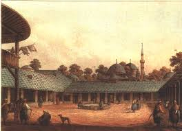

Lüleburgaz, tarih boyunca birçok medeniyete ev sahipliği yapmış önemli bir yerleşim alanıdır. İlk yerleşim izleri MÖ 4. yüzyıla kadar uzanır ve antik dönemde "Maidıa" olarak bilinen şehir, Roma İmparatorluğu döneminde stratejik bir yerleşim merkezi haline gelmiştir. Osmanlı döneminde ise Lüleburgaz, özellikle 15. yüzyılda önemli bir şehir statüsü kazanmış, dönemin ünlü padişahı Kanuni Sultan Süleyman’ın komutanı Sokollu Mehmet Paşa’nın izlerini taşıyan tarihi yapılarla zenginleşmiştir. Bu dönemde şehir, askeri ve ticaret açısından büyük bir öneme sahipti. 1912 yılında Balkan Savaşları sırasında önemli bir savaş alanı olmuş, ardından Cumhuriyet döneminde hızla gelişmeye başlamıştır. Lüleburgaz’ın tarihi dokusu, Roma, Bizans ve Osmanlı izlerini taşırken, şehirdeki pek çok cami, külliye, türbe ve köprü gibi yapılar günümüze kadar ulaşmıştır. Bu zengin tarihsel geçmiş, Lüleburgaz’ın kültürel ve mimari yapısını hala şekillendirmektedir.
